| 日付 | 2019年1月14日（月） |
|---|---|
| 山域 | 房総 |
| メンバー | 家族（妻、長女・7歳、長男・5歳） |
| 山行形態 | 子連れ日帰り |
| アクセス | 車 |
| ルート (Map) | 佐久間ダム駐車場 (8:59) - (9:39) 八雲神社 - (10:44) 津森山登山口 - (10:49) 津森山 (11:56) - 津森山登山口 (11:57) - (12:34) 人骨山 (12:45) - (13:20) 人骨山登山口 - (14:04) 佐久間ダム駐車場 |
今週末は3連休。どこに行っても帰りの高速が混みそうなので、
比較的混雑の影響の少なそうな房総の山に行くことにする。
ガイドブックを眺め、津森山に目星を付ける。
ネットで情報を集めていると、人骨山と合わせて
周回コースを歩く人が多そうなので、そのコースを歩いてみることにする。
佐久間ダムの駐車場に車を停める。標高70m。
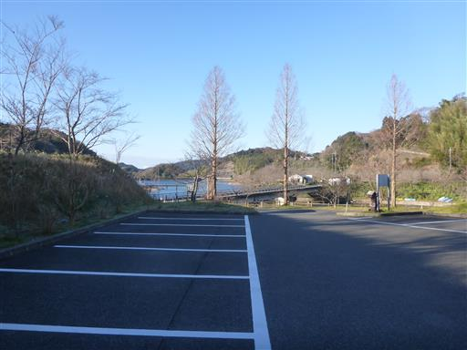
ちょうど水仙まつりをやっている時期で、あちらこちらに水仙の花が咲いている。
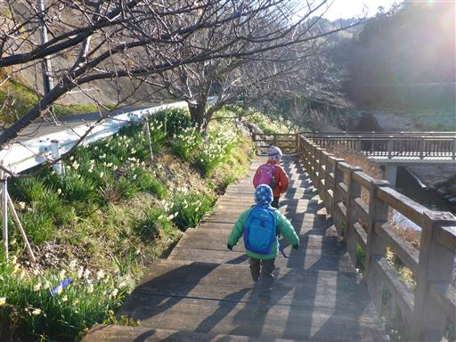
まずは佐久間ダムを見学。比較的小さなダム湖だ。

人影が見えるとカモがやってくる。餌をもらい慣れているのだろう。
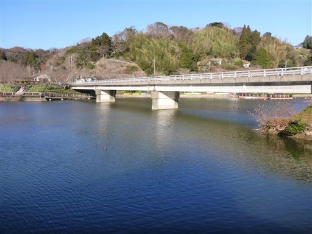
カモのえさが売っていたので購入。
トウモロコシがびっくりするほどたくさん入っている。
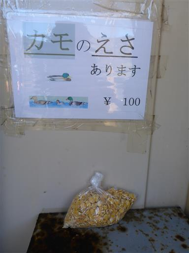
早速餌やり。たくさんあるので次々投げ入れていく。
トウモロコシは水の中に沈んでいくのだが、カモは水に潜って器用に食べている。
それでもかなりの量が底に沈んでそうだ。
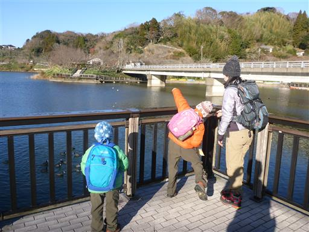
ひとしきり遊んだら登山開始。まずは湖に架かる橋を渡る。
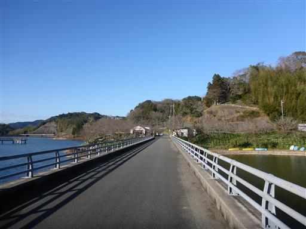
橋から眺める風景は素朴だけど美しい。
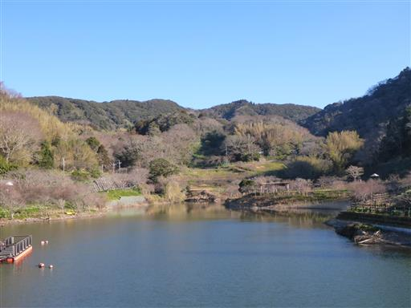
車道をショートカットして水仙ロードに入っていく。
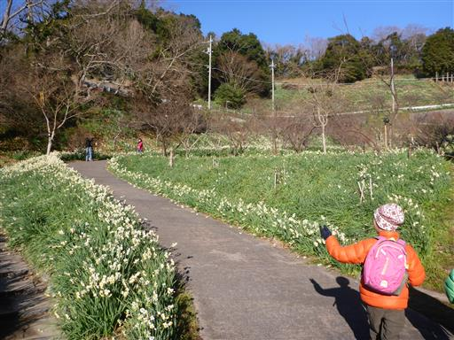
周囲一面を埋め尽くす水仙の花。辺りは水仙の花の香りが漂っている。
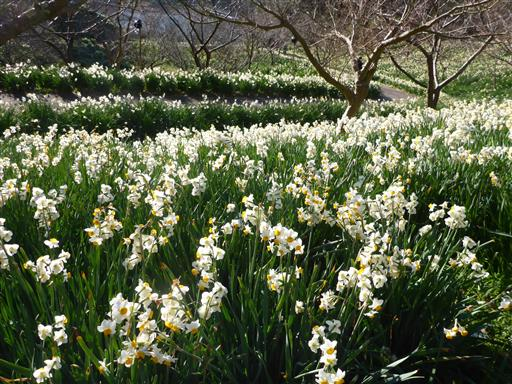
再び車道に出る。ここからしばらくは車道歩きだ。
車道の脇には水仙の花が植えられている。
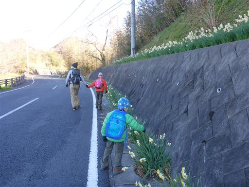
法面に地蔵が祀られている。
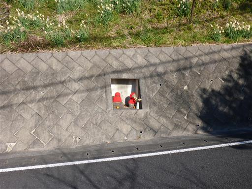
この辺りは「をくづれ水仙郷」と呼ばれている。漢字で書くと「大崩」。
「を」から始まる読み方が独特だ。
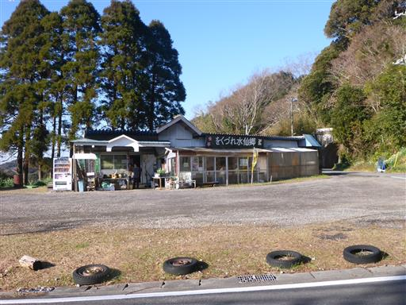
ミカンがたくさん植えられている。
遠くには形の良い三角形の山が見える。帰って調べたら伊予ヶ岳だった。
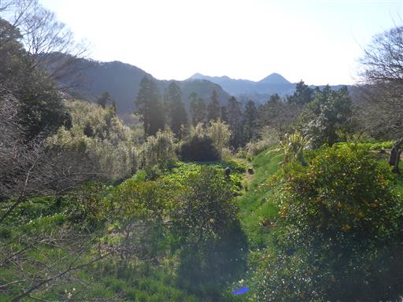
周囲に広がるのは美しい山村風景。
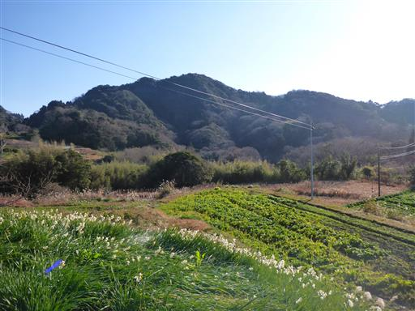
目の前に見える峠目指して緩やかに登る車道を歩いて行く。
周囲を彩る花々、点在する民家、周りを取り囲む低い山々など
いかにも房総らしい風景だ。
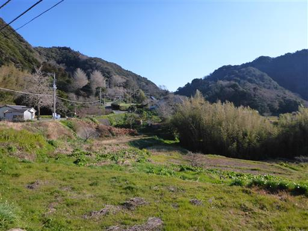
公民館前は有料駐車場になっている。300円と書かれている。
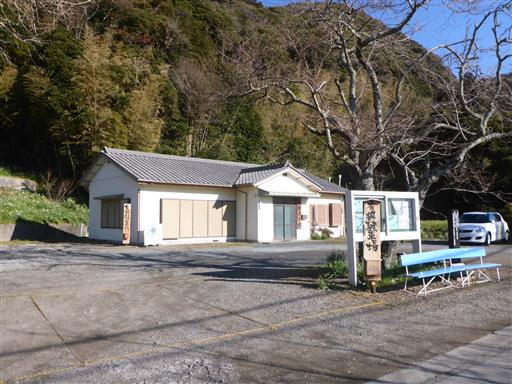
売店に立ち寄る。竹の花瓶や花、鹿の角などが売られている。
売店の気さくなおじさんと少し立ち話。下山後にもここに立ち寄り竹の花瓶を購入する。
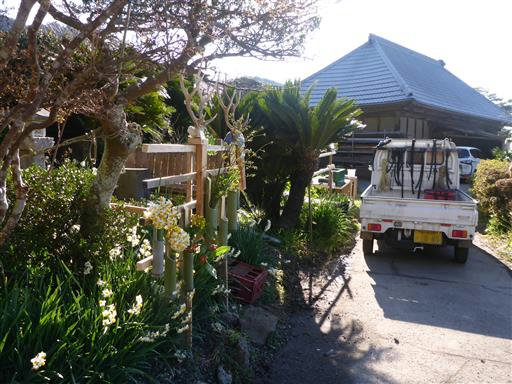
峠近くの八雲神社に寄り道する。1096年創建と書かれている。
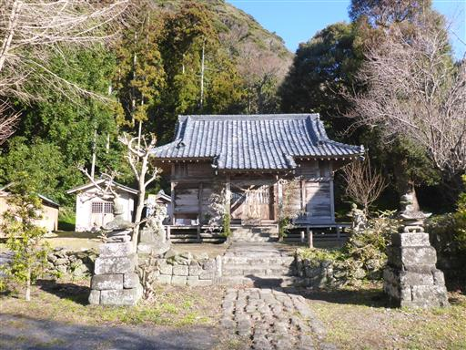
側には樹齢約300年のみごとなイチョウの木が立っている。
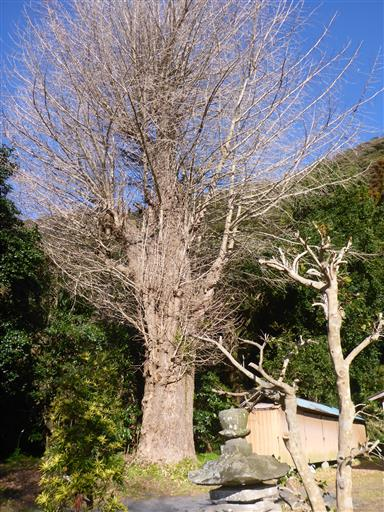
すぐ隣にあるのは満藏寺。神社と寺が併設されているのはよくあることだ。
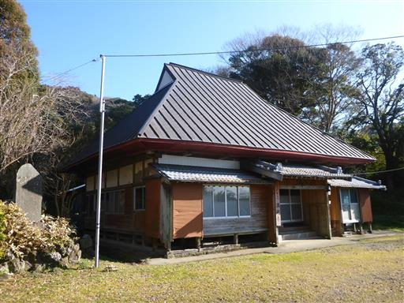
水仙ロードは続く。全て人の手で植えられたものなのだろうか？
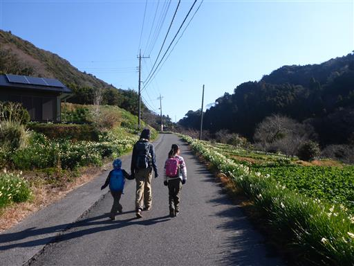
標高が上がると見晴らしが良くなってくる。遠くに見える双耳峰は昨年登った富山だ。
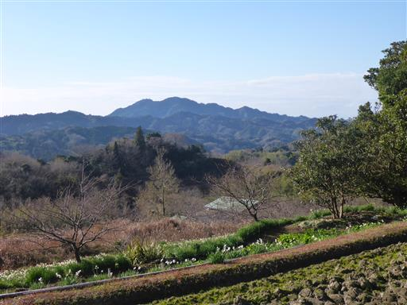
分岐点を左に折れる。標識には人の指が描かれている。
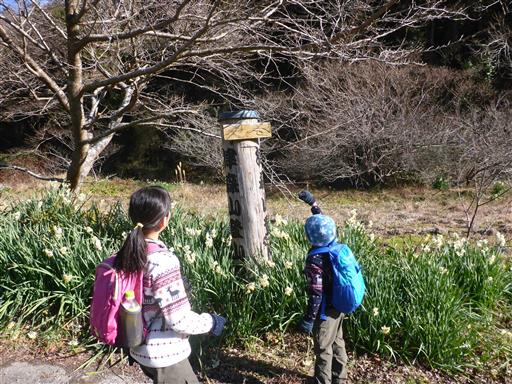
ガイドブックによるとここに牛舎があるはずなのだが、もう廃墟になっている。
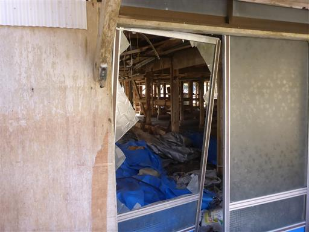
ここから道は細くなる。それでも水仙ロードは続く。
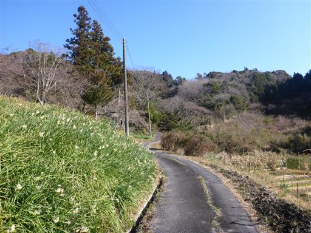
アオキの木。赤い実が美しい。あちらこちらで見られる。
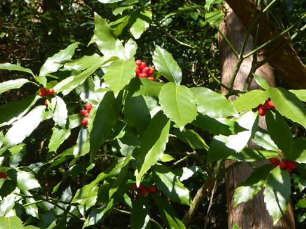
イノシシ捕獲用の罠。これも何個か見かけた。
富山でも見かけたもので、この辺りはイノシシが多いのだろう。
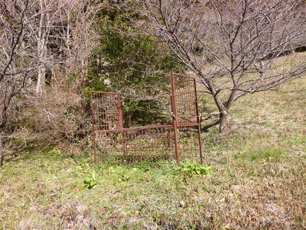
どこまでも素朴な山村風景が続く。
車道歩きもこのような風景の中だとそれほど苦ではない。
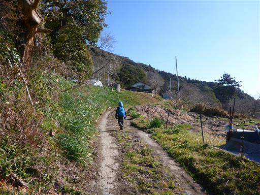
牛舎。こちらにはまだ牛がいる。
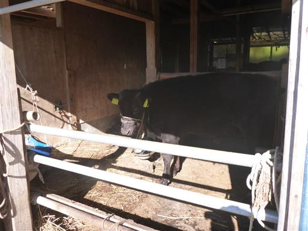
こちらは角のある牛。側に子牛もいる。
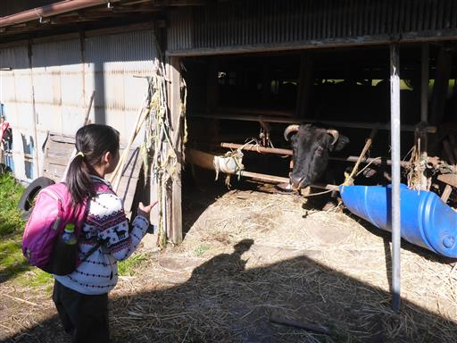
民家の軒先をそっと通り過ぎる。

車道を歩くこと1時間半、山頂直下でようやく津森山登山口に到着する。
「津守山」と書かれているが、ガイドブックやインターネットでは「津森山」だ。
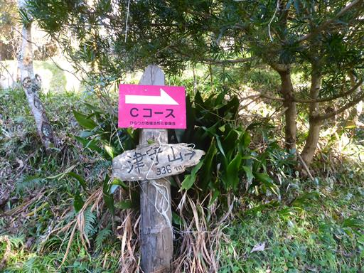
ここからは樹林帯の中の道。こちらはアカガシ。立派な木だ。
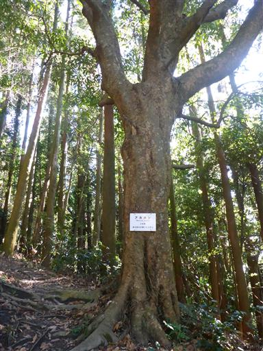
唯一の登りらしい登り。それも一瞬で終わる。
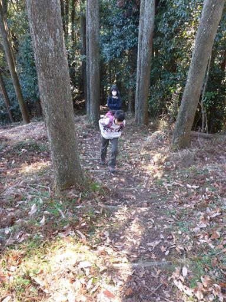
あっという間に山頂が見えてくる。
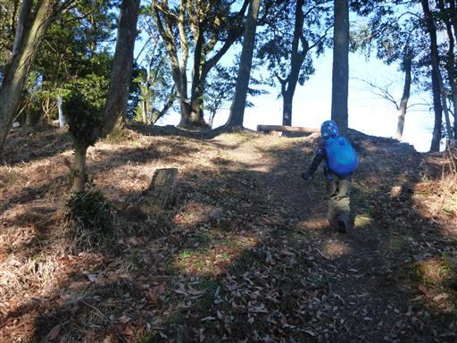
津森山山頂に到着。標高336m。
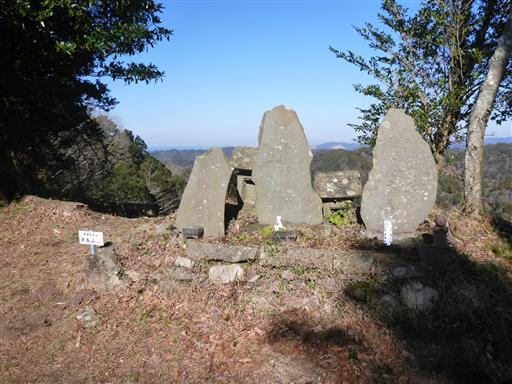
山頂周辺はいくらか木が切られていて、周囲の景色が望める。
こちらは伊予ヶ岳と富山だ。
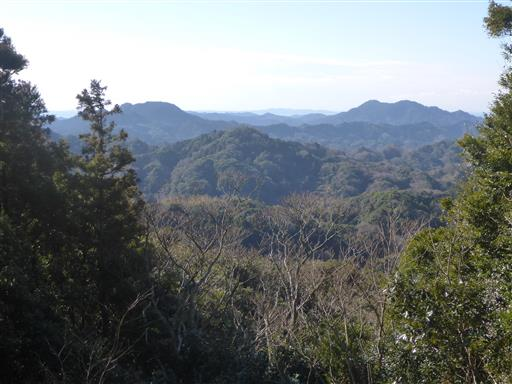
山頂の先に富士山展望台があるらしいので行ってみる。
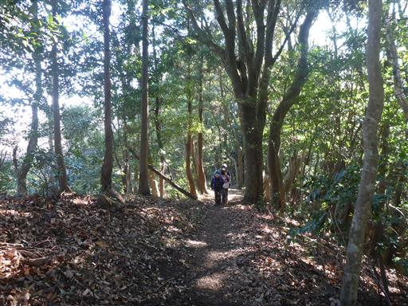
突き当りの木を切られた場所が展望台だ。
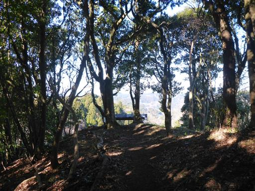
かなり霞んでいるが、かろうじて富士山を望むことができる。
距離があるので、ここからきれいな富士山の姿を見るのは難しそうだ。
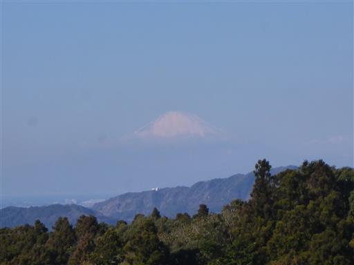
山頂に戻って昼食をとる。風が吹き抜けて少々寒い。
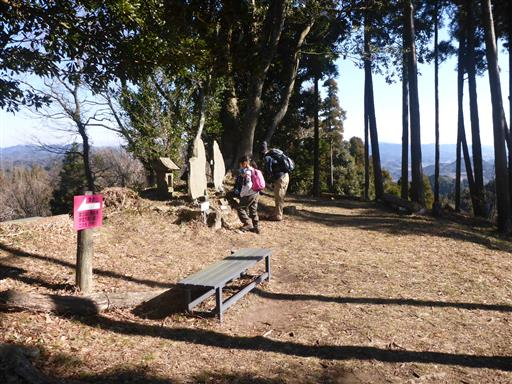
山頂でゆっくり休憩したら次なる目的地の人骨山を目指す。
津森山の登山口まで戻って再び車道歩きだ。

スズメバチの巣を発見。
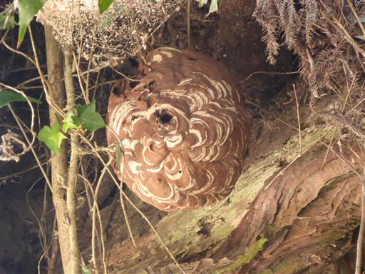
眼下に広がる美しい段々畑。畔には水仙が植えられている。
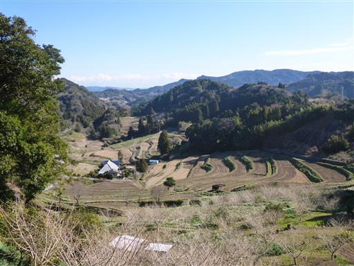
車道を歩いていると左手に人骨山が見えてくる。
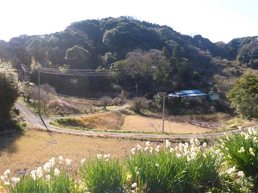
標識は完備されている。夜に見るとちょっと怖そうだ。
それにしても「人骨山」とは変わった名前だ。どういう理由で名づけられたのだろう？
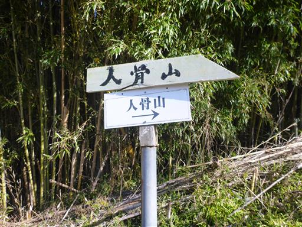
トイレ？風で飛ばないための重しだろうか？木の枠が取り付けられている。
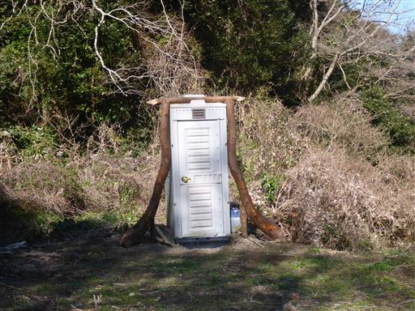
標識に従い人骨山の登山道に入っていく。
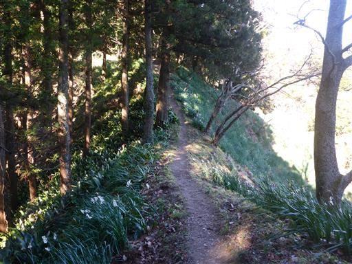
この辺りに広がっている植物は何だろう？かなり大きな葉だ。
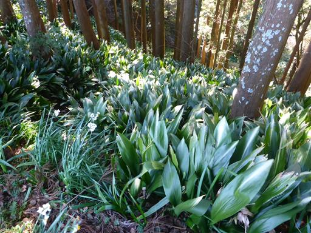
山頂に続く道はかなりの急斜面。太いロープが設置されている。
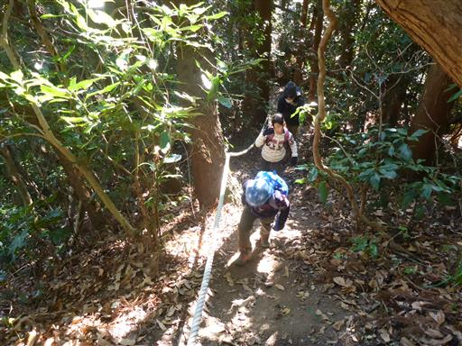
一箇所このロープが障害物になっている。
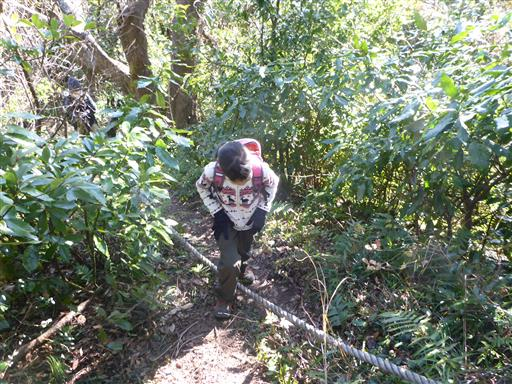
山頂直下。こんなところにも水仙が咲いている。
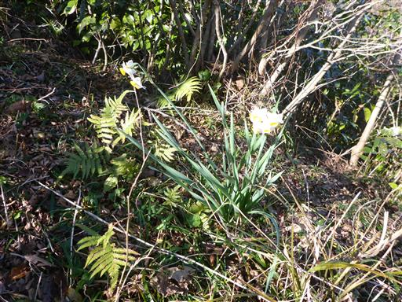
人骨山の山頂に到着。標高292m。
山頂からの景色。房総の山々が広がっている。
津森山よりこちらの方が展望が良い。
なぜかお金を入れる穴が開いた木箱が置かれている。
山頂からの下山はロープに捕まって慎重に歩く。
人骨山から佐久間ダムに向かう道は分岐点に標識がないが、道は明確だ。
周囲は立派な木が多い。
樹林帯の中の尾根道を歩いていく。
本日のコースの中では、この西に向かう尾根道が一番登山道らしい部分だった。
尾根から沢に下りるところは非常に滑りやすい土の斜面になっている。
傾斜はそれほどではないのだが、とにかくよく滑る。
幸いロープが設置されているので、ロープに捕まりながら下っていく。
下りきった場所は少々ぬかるんでいる。

木橋で小さい沢を渡る。
ここからは陰気な沢沿いの道だ。
眼下を流れる川。傾斜がほとんどなく、水の流れもほとんどない。
千葉の川はどこもこのような感じで陰気だ。
大雨が降った後は激流になるのだろうか？一度見てみたい。
車道に合流。こちらにもちゃんと標識がある。
あとは30分ほどの車道歩きだ。
冬枯れの景色。木の枝が非常に細かい。
アスファルト道の端の方は苔に覆われている。こんもりしていて可愛らしい。
トトロが住んでいそうな森。
整備されていない竹藪。
菜の花。
そして梅の花。春を感じられる風景だ。
売店「君の名は」に立ち寄る。ここで水仙を購入。
映画と関連があるとは思えないが、このネーミングは何故だろう？
駐車場に戻ってくる。
短いコースだったが、寄り道をしながらゆっくり歩いたので、案外時間がかかった。
ほとんどが車道歩きのコースになってしまったが、
房総らしい山村風景と水仙の花をたくさん眺められた山旅だった。